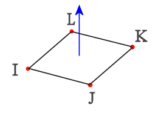

使用2D 单元法向命令来显示和反转2D 单元的法向。
所有 2D 单元都具有用于确定其顶部和底部的法向（垂直）。单元法向一致可确保有限元模型的总体质量。例如，法向一致对于以下几项非常重要：
正确定义曲面之间的接触。
对层状复合材料进行建模。
后处理 2D 单元的应力或应变结果。
单元的正法向通过右手定则来定义，遵循 I、J、K、L 节点序列，如图所示：

可以检查以下对象的法向：
所有显示单元。
选定的单元。
检查单元的法向后，可以使用法向反向选项来反转法向。单击法向反向时，软件会反转所选面上或所选网格内所有 2D 单元的法向。反转单元的法向后，会使该单元的连接反向。例如，如果软件以 1,2,3,4 顺序创建了单元的节点，连接反向后该顺序就变成 4,3,2,1。
注释：如果反转单元的法向，软件会在所有网格更新中保留此反向。
使用按种子单元定向法向选项可定向 2D 单元的法向，以匹配所选种子单元的法向。种子单元的方向处于预期方向。
可以使用按种子单元定向法向选项来快速修改单元的法向，以使这些法向一致。
注释：如果希望您的选择止于非岐义边的末端，则应先合并任何重合节点，然后使用按种子单元定向法向选项。要合并重合节点，则使用重复节点命令。